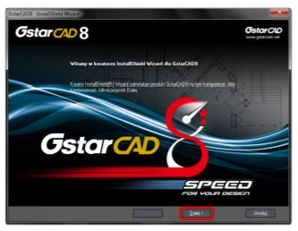
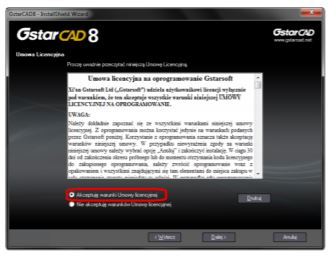
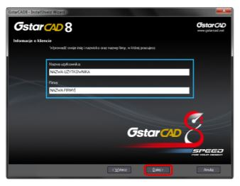
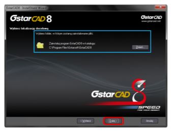
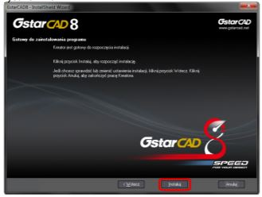
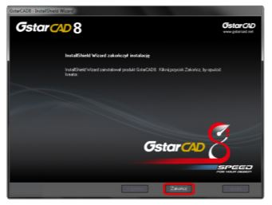

Instalacja
Instalator programu GstarCAD 8 można pobrać bezpośrednio ze strony internetowej www.gstarcad.pl. Instalator programu GstarCAD 8 poprowadzi Cię krok, po kroku przez proces instalacji. Program rozróżni automatycznie sposób rejestracji w zależności od tego czy użytkownik skorzysta z klucza sprzętowego czy numeru seryjnego licencji elektronicznej. Poniżej zostały wyszczegulnione kolejno etapy procesu instalacji:
1.Kliknij dwukrotnie na pobrany plik wykonywalny .exe w celu uruchomienia instalatora programu GstarCAD 8. Kliknij przycisk "Dalej" aby kontynuować proces instalacji. Patrz Rysunek 1-1.

Rys.1-1.
2. Wyświetlone zostanie okno dialogowe zawierające informacje dotyczące warunków licencji. Po zapoznaniu się z nimi zaznacz opcję "Akceptuję warunki Umowy licencyjnej" i kliknij przycisk "Dalej" aby kontynuować. Patrz Rysunek 1-2.

Rys.1-2.
3. W następnym oknie instalatora wprowadź swoje dane użytkownika i kliknij przycisk "Dalej". Patrz Rysunek 1-3.
Rys.1-3.
4. Określ ścieżkę katalogu, do którego instalator ma zainstalować pliki programu i kliknij przycisk "Dalej". Patrz Rysunku 1-4.
Rys.1-4.
5. W oknie "Opcje instalacji" możesz zaznaczyć dodatkową opcję VBA. Następnie kliknij przycisk "Dalej".
6. Instalatar jest już gotowy do rozpoczęcia procesu instalacji programu. Jeżeli chcesz sprawdzić lub zmienić którekolwiek z wybranych ustawień kliknij przycisk "Wstecz". W celu rozpoczęcia instalacji kliknij przycisk "Instaluj". Patrz Rysunek 1-5.
Rys.1-5.
7. Instalacja programu GstarCAD 8 przebiegła pomyślnie. Kliknij przycisk "Zakończ" aby zakończyć pracę instalatora. Patrz Rysunek 1-6

Rys.1-6.
[Źródło: gstarcad.pl]